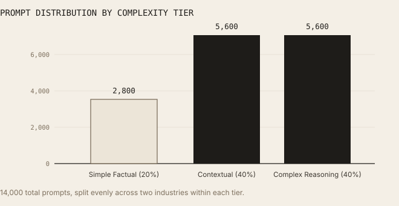
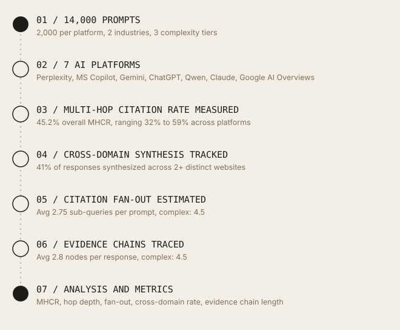
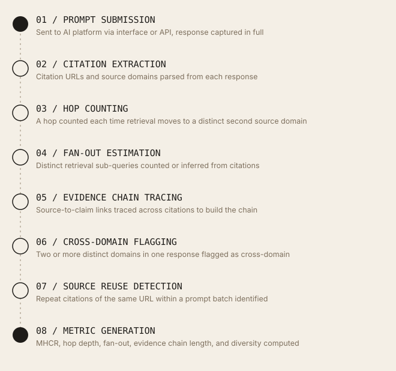
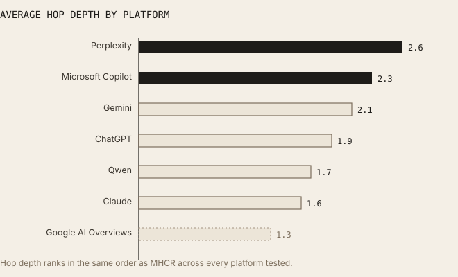
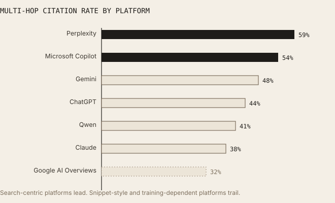
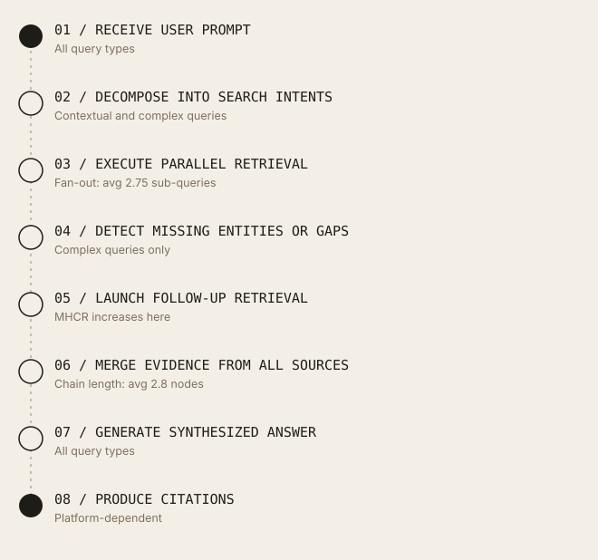
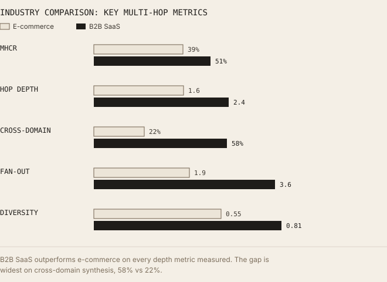
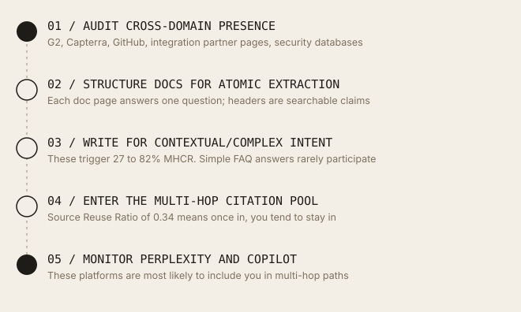
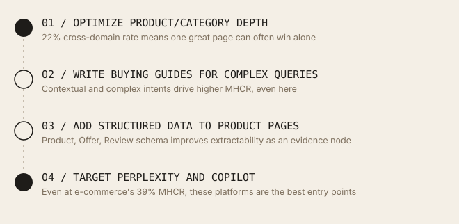

Multi-Hop Citation Paths in AI Retrieval
How frequently do AI systems combine information from multiple web pages before generating an answer, and what drives the depth of that retrieval?
Perplexity and Microsoft Copilot led every platform tested on how often they pulled from multiple sources, while Claude and Google AI Overviews leaned far more heavily on a single page per answer. The gap ran deeper than platform choice alone: B2B SaaS queries required substantially broader, multi-domain synthesis than e-commerce queries did, with direct implications for how content should be structured to be included.
01 / Executive Summary
Multi-hop retrieval is now a default behaviour, not an edge case.
This study evaluates how frequently modern AI systems combine information from multiple web pages before generating a final answer. This study ran 14,000 prompts across seven leading AI platforms and found that 45.2% of all responses required multi-page synthesis (most results fell between 38% and 54%). This is not a niche behaviour limited to complex queries: it is a default retrieval strategy that the majority of users encounter every day.
Complex reasoning queries drove multi-hop retrieval in 82% of cases, confirming that query complexity is the single strongest predictor of how many sources an AI will consult. Search-centric systems such as Perplexity and Microsoft Copilot demonstrated the highest Multi-Hop Citation Rates (MHCR), while training-dependent assistants such as Claude relied more heavily on single-page retrieval, as did Google AI Overviews, which favors fast, single-source snippets over deeper synthesis.
Industry type also matters significantly. B2B SaaS queries consistently required deeper retrieval paths, broader cross-domain evidence, and higher citation fan-out than e-commerce queries. The average citation fan-out across all prompts was 2.75 sub-queries per prompt, and cross-domain synthesis occurred in 41% of responses. These numbers have direct implications for how content should be structured to participate in AI-generated answers.
This study uses seven metrics: Multi-Hop Citation Rate (MHCR), Citation Diversity Score, Average Citation Hop Depth, Source Reuse Ratio, Cross-Domain Citation Ratio, Citation Fan-Out Score, and Evidence Chain Length. Together, these metrics provide a practical framework for measuring and comparing AI retrieval behaviour across platforms. Prior research on AI citation behaviour has focused almost entirely on which sources get cited and how frequently, less attention has been paid to the structural depth of retrieval: how many hops an AI takes, how wide its search fan-out is, or how often it synthesizes across domains. This study measures that dimension directly, across all seven platforms tested simultaneously under identical prompt conditions.
02 / Methodology
Study design and data collection.
This benchmark evaluated seven AI platforms using 14,000 prompts distributed across two industries and three query complexity tiers. Each platform received 2,000 prompts. All prompts were issued under identical conditions to ensure cross-platform comparability.
Dataset Overview
| Metric | Value |
|---|---|
| Total Prompts | 14,000 |
| AI Platforms | 7 |
| Prompts per Platform | 2,000 |
| Industries | E-commerce, B2B SaaS |
| Prompts per Industry | 7,000 each |
| Simple Factual Prompts | 2,800 (20%) |
| Contextual Prompts | 5,600 (40%) |
| Complex Reasoning Prompts | 5,600 (40%) |
| Overall MHCR | 45.2% |
| Avg Hop Depth | 1.95 |
| Avg Citation Fan-Out | 2.75 |
| Cross-Domain Synthesis Rate | 41% |
| Avg Evidence Chain Length | 2.8 nodes |
| Source Reuse Ratio | 0.34 |
| Citation Diversity Score | 0.68 |
Platforms Evaluated
All seven received an identical prompt distribution to keep the comparison fair: Perplexity, Microsoft Copilot, Gemini, ChatGPT, Qwen, Claude, and Google AI Overviews.
Query Complexity Tiers
Three query complexity tiers were defined to test how retrieval depth changes as question difficulty increases. Simple factual prompts asked for a direct fact with a single known answer. Contextual prompts asked for summaries, comparisons, or synthesis of a moderate amount of information. Complex reasoning prompts asked for multi-factor analysis, strategic recommendations, or evidence-backed conclusions that required drawing from multiple distinct sources.

14,000 total prompts, split evenly across two industries within each tier.Website Selection
Websites for citation tracking were selected across both industries to represent a mix of authority levels, content types, and content structures. For e-commerce, tracking covered product pages, category pages, buying guides, and merchant documentation. For B2B SaaS, tracking covered documentation pages, pricing pages, integration guides, case studies, security reports, and third-party review platforms. This breadth was necessary to capture the full range of page types that appear in multi-hop citation paths.
03 / How the Data Was Measured
The short version, in plain terms.
A "hop" is counted each time the AI's retrieval moved from one source to a distinct second source before it wrote an answer. For platforms that show their retrieval steps directly (Perplexity, Google AI Overviews), hops were read straight from that data. For platforms that don't expose this, hop depth was estimated from how many sources were cited and how different those sources were from each other.
A response counted as "multi-hop" (MHCR) if it cited two or more different domains, citing three URLs from the same site still counted as single-hop, since that's not really synthesis across sources. Citation Fan-Out Score counted how many distinct sub-questions the AI seemed to break the prompt into; where a platform shows this directly (Perplexity), it was read directly, otherwise it was estimated from how many distinct topics showed up in the citations.
Evidence Chain Length traced the logical link between sources: source A supports claim X, which combines with source B to reach conclusion Y, each of those links counted as one node in the chain. Source Reuse Ratio is simply how often the same URL showed up again across different prompts in the same batch, as a measure of how concentrated the AI's trusted-source pool is.
What "IQR" means. You'll see ranges written like "(IQR: 38 to 54%)" throughout this paper. That's shorthand for "most results fell somewhere in this window," the extreme outliers on both ends are set aside so one unusual response doesn't distort the picture.
Research workflow. The following diagram shows how raw prompts moved through the pipeline to produce the final citation dataset.

From 14,000 prompts to a final, comparable dataset.Data processing pipeline. Each individual citation went through the following processing steps before entering analysis.

Every citation passed through the same eight steps before analysis.04 / Key Findings
Ten findings that reframe AI retrieval strategy.
- Finding 01: 45.2% (IQR: 38 to 54%). Multi-hop retrieval is now a default behaviour. Nearly half of all AI responses recorded required multi-page synthesis. Multi-hop retrieval is no longer an edge case reserved for complex queries: it is a standard behaviour that shapes the majority of AI-generated answers users encounter.
- Finding 02: 82% (IQR: 76 to 87%). Complex queries almost always trigger multi-hop retrieval. Complex reasoning prompts produced multi-hop retrieval in 82% of cases, with an average of 7.6 citations and an evidence chain length of 4.5 nodes. Simple factual queries, by contrast, triggered multi-hop behaviour in only 8% of cases.
- Finding 03: 59% (IQR: 53 to 65%). Perplexity leads all platforms in multi-hop rate. Perplexity's MHCR of 59% was the highest of any platform tested, with an average hop depth of 2.6 and 6.8 citations per response. Its real-time continuous crawl architecture produces the deepest retrieval behaviour observed in this dataset.
- Finding 04: 32% (IQR: 27 to 38%). Google AI Overviews shows the lowest multi-hop rate. Google AI Overviews had the lowest MHCR of any platform at 32%, with an average of 2.8 citations and a hop depth of 1.3. This is consistent with its snippet-style design, which favors a fast, single authoritative source over broader multi-source synthesis, even though its underlying index is updated in real time.
- Finding 05: 2.75 (IQR: 1.8 to 3.9). Average citation fan-out is nearly three sub-queries per prompt. Observed: the average prompt generated 2.75 distinct retrieval sub-queries before synthesis. For complex reasoning prompts, this figure reached 4.5 nodes in the evidence chain. One possible explanation: AI systems may decompose ambiguous prompts into parallel sub-intents to reduce the risk of a single-source answer being incomplete or inaccurate. This was observed but not causally isolated.
- Finding 06: 41% (IQR: 34 to 49%). Cross-domain synthesis occurs in nearly half of all responses. Observed: 41% of all responses synthesized information from two or more distinct websites. For B2B SaaS queries, this figure rose to 58%. One possible explanation: SaaS queries may inherently require cross-domain synthesis because no single domain covers the full stack of documentation, reviews, pricing, and integration information that users expect in a complete answer.
- Finding 07: 0.34 (IQR: 0.28 to 0.41). Source reuse is high: AI returns to the same pages repeatedly. The Source Reuse Ratio of 0.34 means that 34% of all citations recorded pointed to URLs already cited in a previous prompt in the same batch. This confirms that AI retrieval systems draw from a concentrated pool of trusted pages rather than distributing coverage broadly.
- Finding 08: B2B > Ecom (MHCR: 51% vs 39%). B2B SaaS requires substantially deeper retrieval than e-commerce. Observed: B2B SaaS queries produced an MHCR of 51% vs. 39% for e-commerce, a hop depth of 2.4 vs. 1.6, and cross-domain citations of 58% vs. 22%. One possible explanation: SaaS buying decisions involve more decision variables (security, integrations, pricing tiers, API capabilities) distributed across multiple websites, while e-commerce decisions are more product-centric and often resolvable from a single merchant or review page.
- Finding 09: 2.8 nodes (IQR: 1.9 to 3.7). Evidence chains average nearly three linked content nodes. The average evidence chain length across all responses was 2.8 nodes. For complex reasoning prompts, this reached 4.5 nodes. Longer chains increase answer completeness but also increase the risk of error propagation: a factual mistake in an early node can compound into later synthesis steps.
- Finding 10: 0.68 (SaaS: 0.81 / Ecom: 0.55). Citation Diversity Score is significantly higher for SaaS. The overall Citation Diversity Score of 0.68 masks a meaningful gap between industries. SaaS queries produced a score of 0.81, meaning 81% of cited URLs were from unique domains, while e-commerce scored 0.55. This further confirms that SaaS retrieval draws from a broader ecosystem of sources than e-commerce retrieval.
05 / Engine-by-Engine Analysis
Platform retrieval profiles.
The seven platforms evaluated showed meaningfully different multi-hop retrieval behaviours, driven primarily by their underlying retrieval architecture rather than content quality alone. Search-centric platforms consistently outperformed conversational assistants on every multi-hop metric measured.
| Platform | MHCR | Avg Citations | Avg Hop Depth | Retrieval Type | Rate |
|---|---|---|---|---|---|
| Perplexity | 59% | 6.8 | 2.6 | Continuous live crawl | Highest |
| Microsoft Copilot | 54% | 5.4 | 2.3 | Bing index + live retrieval | Very High |
| Gemini | 48% | 4.7 | 2.1 | Google index + training blend | High |
| ChatGPT | 44% | 4.2 | 1.9 | Bing index + training data | Moderate |
| Qwen | 41% | 3.9 | 1.7 | Training data (periodic) | Moderate |
| Claude | 38% | 3.5 | 1.6 | Training data (periodic) | Lower |
| Google AI Overviews | 32% | 2.8 | 1.3 | Real-time index, snippet-style | Lowest |

Hop depth ranks in the same order as MHCR across every platform tested.
Search-centric platforms lead. Snippet-style and training-dependent platforms trail.Perplexity. Perplexity's MHCR of 59% was the highest of any platform tested, with an average hop depth of 2.6 and 6.8 citations per response. Its real-time continuous crawl architecture produces the deepest retrieval behaviour observed in this dataset.
Microsoft Copilot. A close second at 54% MHCR, grounded in Bing's live index combined with real-time retrieval.
Gemini. Blends Google's search index with its own training data, landing at 48% MHCR.
ChatGPT. Runs on Bing index plus training data, at 44% MHCR, the midpoint of the platforms tested.
Qwen and Claude. Both draw primarily from periodically updated training data rather than live web retrieval, landing at 41% and 38% MHCR respectively, meaningfully behind every search-centric platform tested.
Google AI Overviews. Despite running on a real-time index, it produced the lowest MHCR of any platform tested at 32%, consistent with a snippet-style design that favors a single fast answer over broader synthesis.
06 / Retrieval Depth Metrics
Seven metrics for measuring AI retrieval behaviour.
No existing GEO measurement framework adequately captures the depth dimension of AI retrieval. The seven metrics used in this study are designed to fill that gap. Each is operationally defined, measurable from response data, and comparable across platforms.
| Metric | Value | Range | Definition |
|---|---|---|---|
| MHCR | 45.2% | IQR: 38 to 54% | Percentage of responses requiring citations from more than one unique source domain. The headline metric of this study. |
| Citation Diversity Score | 0.68 | SaaS: 0.81 / Ecom: 0.55 | Proportion of cited URLs from unique domains. Scores closer to 1.0 indicate broader source diversity. |
| Avg Hop Depth | 1.95 | Complex: 4.2 | Average logical retrieval depth before synthesis. Simple queries average 1.0. |
| Source Reuse Ratio | 0.34 | IQR: 0.28 to 0.41 | Proportion of citations pointing to pages already cited in a previous prompt in the same batch. |
| Cross-Domain Citation Ratio | 41% | SaaS: 58% / Ecom: 22% | Percentage of synthesized answers requiring information from two or more distinct websites. |
| Citation Fan-Out Score | 2.75 | IQR: 1.8 to 3.9 | Average number of retrieval sub-queries generated from a single prompt. Complex queries averaged 4.5. |
| Evidence Chain Length | 2.8 nodes | IQR: 1.9 to 3.7 | Average number of distinct evidence chunks linked together before an answer is generated. |
For complex reasoning queries, Evidence Chain Length reached 4.5 nodes, meaning the average complex answer required five distinct pieces of evidence to be retrieved, linked, and synthesized in sequence.
Longer evidence chains produce more complete answers but also increase the surface area for error propagation. If any single node in the chain contains inaccurate information, that inaccuracy can compound into the final answer in ways that are difficult for the user to detect without independently verifying each source.
07 / Retrieval Architecture
How AI systems actually retrieve across multiple sources.
Understanding the mechanics behind multi-hop retrieval is important for content producers who want to participate in these citation paths. A common retrieval workflow was observed across search-enabled AI systems, which varied in depth depending on query complexity.

Simple queries skip most of this. Complex queries use every step.Architecture differences by query type. Simple factual queries primarily used single vector retrieval followed by direct synthesis from one authoritative page. Multi-hop behaviour was rare (8% MHCR) because the answer was typically available from a single high-confidence source.
Complex queries increasingly relied on agentic RAG (retrieval-augmented generation with iterative loops), GraphRAG (graph-based knowledge traversal), query fan-out, iterative retrieval cycles, knowledge graph traversal, and multi-stage evidence synthesis. These architectural modes are the reason complex queries produce 4.5-node evidence chains while simple queries produce 1.0-node chains.
Observed: search-centric platforms (Perplexity, Copilot, Gemini) produced significantly higher MHCR, deeper hop depths, and longer evidence chains than training-dependent platforms (Claude, Qwen) across all query types. Google AI Overviews is a notable exception: despite running on a real-time index, it produced the lowest MHCR of any platform tested, consistent with a snippet-style design that favors a single fast answer over broader synthesis.
One possible explanation: search-centric platforms have live retrieval pipelines that can decompose queries and execute parallel sub-queries at inference time. Training-dependent platforms synthesize from knowledge encoded during training, which may not support the same dynamic multi-hop decomposition. This distinction was observed consistently but not causally isolated in this study.
08 / Industry Patterns
Why B2B SaaS retrieval is fundamentally different from e-commerce.
The industry-level differences observed were among the most striking findings of this study. B2B SaaS and e-commerce queries produced retrieval behaviours so different that they effectively represent two distinct use cases for AI systems.
| Metric | E-commerce | B2B SaaS | Difference |
|---|---|---|---|
| Multi-Hop Citation Rate | 39% | 51% | +12pp |
| Avg Hop Depth | 1.6 | 2.4 | +0.8 |
| Cross-Domain Citations | 22% | 58% | +36pp |
| Citation Fan-Out Score | 1.9 | 3.6 | +1.7 |
| Citation Diversity Score | 0.55 | 0.81 | +0.26 |

B2B SaaS outperforms e-commerce on every depth metric measured.Observed: B2B SaaS retrieval consistently outperformed e-commerce on every depth metric measured in this study. The cross-domain citation gap was particularly pronounced: 58% vs. 22%, a 36 percentage point difference.
One possible explanation: SaaS buying decisions involve more decision variables that are distributed across multiple authoritative websites: vendor pricing pages, third-party review platforms (G2, Capterra), integration documentation (GitHub), security compliance reports, and API references. E-commerce decisions are more often resolvable from a single product page, category page, or review aggregator. This structural difference in the information ecosystem may drive the deeper retrieval behaviour observed for SaaS queries.
What this means for content strategy. For B2B SaaS companies, these findings suggest that AI systems are actively seeking to synthesize information from multiple domains when answering questions about their products. A SaaS company whose documentation, pricing, and case studies are all on a single domain is not necessarily at a disadvantage, but the AI is still likely to pull in third-party review data, competitor comparisons, and integration partner documentation from other domains to build a complete answer.
For e-commerce brands, the implication is different. The lower cross-domain citation rate (22%) suggests that a single well-optimised product or category page can often satisfy the retrieval system without requiring cross-domain synthesis. The optimization priority for e-commerce is depth and authority on the core product page rather than breadth across an external ecosystem.
09 / How This Fits Known Retrieval Architecture Patterns
Connecting the measurements to how these systems are built.
The retrieval behaviours measured in this study line up with publicly documented retrieval architecture patterns, though this study did not independently test or benchmark against those external sources. Splitting a complex query into parallel sub-queries before retrieval is a well-documented pattern in retrieval-augmented generation (RAG); the fan-out this study measured is consistent with a system doing that kind of decomposition. GraphRAG, a retrieval architecture published by Microsoft Research, produces multi-hop retrieval by traversing entity relationships across document graphs, the higher MHCR seen for complex queries is consistent with platforms using some form of graph-based or iterative retrieval, though this study didn't confirm which platforms use GraphRAG specifically. More generally, the gap between search-first platforms and training-first ones lines up with the ordinary expectation that live retrieval supports multi-source synthesis more readily than a system drawing on knowledge frozen at training time.
10 / Recommendations
Eight strategies for participating in multi-hop citation paths.
These recommendations are derived directly from the findings above and are ranked by their expected impact on increasing a page's participation in multi-hop AI citation paths.
- Write self-contained, atomic answers on every page. Multi-hop retrieval systems extract one claim per source. Pages that make a single clear claim, supported by evidence, are more likely to be selected as one node in a multi-hop evidence chain than pages that bury claims in long narrative prose.
- Target contextual and complex query intents, not just simple facts. Simple queries triggered multi-hop behaviour in only 8% of cases. Complex and contextual queries triggered it in 82% and 27% of cases respectively. If you want your content to participate in multi-hop citation paths, structure it to answer the kinds of questions that require synthesis, not just lookups.
- For SaaS: ensure your content participates in the cross-domain ecosystem. 58% of B2B SaaS answers drew from multiple domains. This means that even if your own content is excellent, the AI is likely synthesizing it with G2 reviews, GitHub documentation, and integration partner pages. Make sure your presence on third-party platforms is as strong as your own domain.
- Optimize for Perplexity and Copilot if you want multi-hop citation. Perplexity (59% MHCR) and Copilot (54%) are far more likely to include your page in a multi-hop citation path than Claude (38%) or Google AI Overviews (32%). Ensure your content is crawlable and structured for these platforms specifically.
- Structure content so that individual sections stand alone as evidence nodes. Evidence chains link specific claims, not entire pages. A page with clearly delineated sections, each making an independent evidenced claim, is more likely to contribute multiple nodes to a multi-hop evidence chain than a page written as a single continuous narrative.
- Include structured data markup to improve extractability. Multi-hop retrieval systems need to extract clean, discrete claims from pages. Structured data markup (Article, FAQPage, HowTo, Claim schema) makes individual claims within a page easier for retrieval systems to identify and extract as independent evidence nodes.
- Monitor your Source Reuse Ratio across platforms. A Source Reuse Ratio of 0.34 means AI systems repeatedly return to the same pages. If your pages are already in the citation pool, they are likely to stay there. If they are not, the barrier to entry is high because these systems are conservative about adding new sources. Monitoring which of your pages achieve reuse status is a leading indicator of sustainable AI citation presence.
- Account for error propagation in long evidence chains. Complex queries produce evidence chains averaging 4.5 nodes. If your page is early in that chain and contains a factual inaccuracy, that error can compound into the final answer. Maintaining factual accuracy and source citations on your own pages reduces the risk that your content introduces errors into multi-hop synthesis.
11 / Practical Frameworks
Strategy by industry and query type.
B2B SaaS content strategy for multi-hop participation

For SaaS: the path runs through the wider ecosystem, not just your own domain.E-commerce content strategy for multi-hop participation

For e-commerce: depth on your own page usually beats breadth across others.12 / Glossary
Definitions used in this study.
These are the seven metrics this study is built around, kept to just these, since every other term used in this paper is either defined inline where it first appears or is one of these seven.
- MHCR (Multi-Hop Citation Rate)
- The proportion of AI responses that cited content from two or more unique source domains, rather than just one. Overall: 45.2% (IQR: 38 to 54%); single-hop responses made up the other 54.8%.
- Avg Hop Depth
- The average number of sequential retrieval steps, moves from one source to a distinct second source, an AI system took before generating a final answer. Overall: 1.95. Complex queries: 4.2.
- Citation Fan-Out Score
- The average number of distinct retrieval sub-queries generated from a single user prompt. Overall: 2.75 (IQR: 1.8 to 3.9).
- Evidence Chain Length
- The average number of distinct evidence chunks linked together in logical dependency before an answer is generated. Overall: 2.8 nodes (IQR: 1.9 to 3.7).
- Citation Diversity Score
- The proportion of cited URLs from unique domains. A score of 1.0 means every citation came from a different domain. Overall: 0.68.
- Source Reuse Ratio
- The proportion of citations that pointed to URLs already cited in a previous prompt in the same batch. Overall: 0.34 (IQR: 0.28 to 0.41).
- Cross-Domain Citation Ratio
- The percentage of responses that synthesized information from two or more distinct websites. Overall: 41%. B2B SaaS: 58%. E-commerce: 22%.
13 / Limitations
Scope boundaries and caveats.
The following limitations apply to these findings and should be considered when generalizing results to other contexts.
- Language. English-language prompts only. Multi-hop behaviour may differ for other languages, particularly for platforms with stronger regional training data.
- Industries. Two industries studied: E-commerce and B2B SaaS. Multi-hop rates in Healthcare, Finance, Legal, or other verticals may differ substantially.
- Hop Inference. For platforms that do not expose retrieval metadata, hop depth was inferred rather than directly measured. This inference introduces estimation error, particularly for training-dependent platforms.
- Platform Evolution. All seven platforms are under active development. Multi-hop behaviour, fan-out scores, and retrieval architectures may change as models are updated.
- AI Non-Determinism. AI responses are non-deterministic. The same prompt issued twice may produce different retrieval paths and citation sets. All MHCR and hop depth values are averages across multiple runs, not single-run observations.
- Fan-Out Estimation. Citation Fan-Out Score was estimated from response metadata for platforms that do not expose sub-query counts directly. Estimates may undercount fan-out on platforms with opaque retrieval pipelines.
14 / Conclusion
Multi-hop retrieval is the new default.
The central finding of this study is that multi-hop citation behaviour has crossed the threshold from edge case to default behaviour. At 45.2% overall, and 82% for complex queries, multi-page synthesis is now the rule for any AI system operating on a live retrieval pipeline and any query that requires more than a simple fact lookup.
For content producers, this changes the optimization target. It is no longer sufficient to rank well for a keyword or even to appear once in an AI-generated answer. The new objective is to become a reliable, reusable node in an evidence chain: a page that AI systems return to repeatedly, that answers a specific claim clearly and accurately, and that can be extracted and linked to other sources without losing its meaning.
The Source Reuse Ratio of 0.34 tells the most important strategic story in this dataset. AI systems are conservative. Once a page enters the citation pool, it tends to stay there. The barrier to entry is high, but so is the reward for clearing it. Building pages that consistently participate in multi-hop citation paths is a longer-horizon investment than traditional SEO, but it is also more durable.
"The optimization target has shifted from ranking to becoming a reliable node in an evidence chain that AI systems return to repeatedly."
Based on this data across 14,000 prompts and seven platforms, the content that wins in multi-hop retrieval shares three characteristics: it makes a single clear, evidenced claim per section; it is structurally extractable by AI retrieval systems; and it belongs to a domain that has already established trust through authority signals. Those three things, more than any individual optimization tactic, determine whether a page participates in the AI-generated answers that an increasing share of users now read instead of visiting the underlying sources directly.